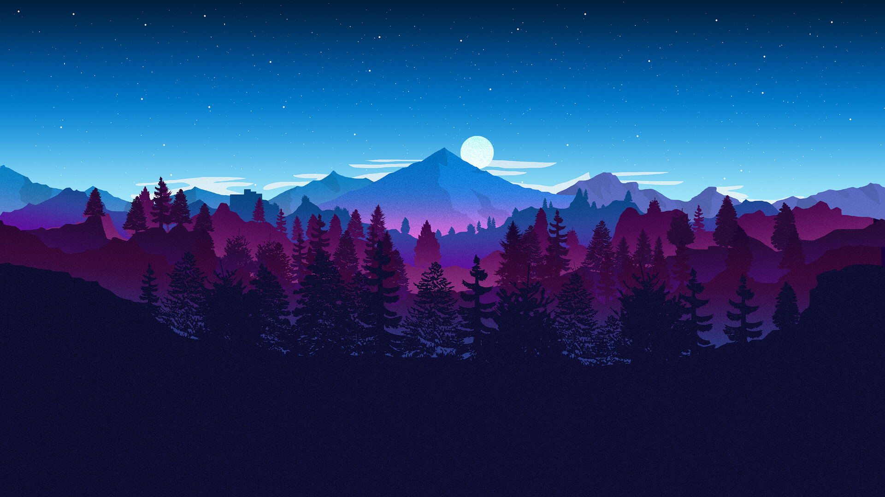

Experiment 2 – Landscape Generator
Description
Created a landscape generator on Glitch and ported it to my portfolio. The landscape has is based on a reference picture and creates unique variations
The reference image contains multiple layers with different colors on a blue/purple color wheel. The forefront has trees which can be represented with triangles. The mountains in the back need more unique polygons. The sky has a gradient with stars present in the sky. The clouds move to add a sense of life. The mountain layers also move slightly with the user's mouse. The mooon also follows the mouse's x position
Reference ImageTechnical
A simple 2D generator that uses polygons and unique polygons to mimic the landscape shown in reference picture. There is a layer of tall trees made of triangles. 3 layers of mountains. A gradient sky, moving clouds, and the moon which follows the mouse position. The mountains also move with the mouse movement
Reflection
The hardest part was making the landscape still look good while reducing it to simple shapes and colors.